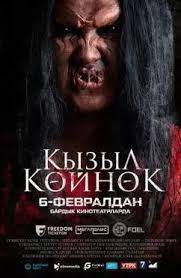

Кызыл койнокчон
Жанр:Ужасы
Режиссёр:Белек Тургунов
В ролях:Айжан Сыдыкова, Саламат Калыбек уулу, Малика Абдразакова, Бекбол Майрамбеков, Абылай Марат уулу, Темирлан Эркинов и Эльдар Есиналинов
Описание: это кыргызское название фильма, который в переводе на русский язык означает "Красное платье". Это фильм ужасов производства Кыргызстана, который рассказывает историю молодой семьи, начинающей новую жизнь на берегу Иссык-Куля, но сталкивающейся с темными тайнами прошлого, оживающими в их кафе. Необъяснимый страх и таинственные явления превращают их жизнь в борьбу за выживание. Фильм обещает быть напряженным и захватывающим, с элементами мистики и ужаса.
Продолжительность:1ч 18 мин
Забронировать билет